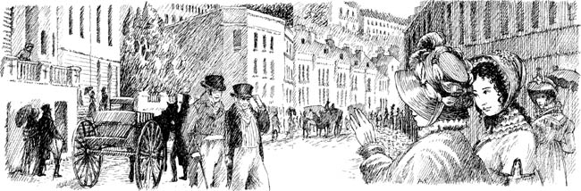

Listen to Part 1:

John và James
Hai tuần trôi qua. Một buổi sáng chủ nhật. Catherine và Isabella cùng nhau đi dạo trên phố Bath.
‘Có hai chàng trai phía trước chúng ta,’ Isabella nói. ‘Họ đang nhìn em kìa. Đi nhanh lên nào. Chúng ta sẽ đi ngang qua họ.’
Catherine rất ngạc nhiên.
‘Đi theo hướng khác thôi,’ cô nói.
‘Không, không!’ Isabella trả lời. ‘Em muốn giới thiệu cho chị một hiệu sách tuyệt vời trong phố Milsom. Hiệu sách ấy bán sách kinh dị!’
Đường phố đông đúc. Có hàng trăm người và có rất nhiều xe ngựa.

Listen to Part 2:
Catherine và Isabella nhìn sang bên kia phố. Đột nhiên, một chiếc xe ngựa màu vàng nhỏ đi lướt qua họ. Isabella thốt lên.
‘Đó là anh trai em, John!’ cô nói. ‘Và anh trai của chị, James, cũng ở cùng với anh ấy, Catherine!’
John Thorpe nhìn thấy hai cô gái. Anh ta dừng con ngựa và nhảy xuống khỏi chiếc xe ngựa màu vàng. Người hầu của anh ta giữ cương ngựa.
John Thorpe là một chàng trai trẻ béo với khuôn mặt bình thường. Anh ta không đẹp trai. Anh ta quay lại và đi về phía Catherine và Isabella. Anh ta cúi chào.
‘John, đây là cô Morland, em gái của James,’ Isabella nói.
‘Rất hân hạnh được gặp cô,’ John Thorpe nói bằng giọng lớn.
‘Cô Morland, cô có thích con ngựa và xe ngựa của tôi không?’ John Thorpe hỏi. ‘Chúng là tốt nhất ở Bath! Một ngày nào đó, tôi sẽ đưa cô đi dạo.’
‘Chúng em sẽ rất thích được đi dạo bằng xe ngựa của anh, anh Thorpe ạ,’ Catherine nói.
‘Nhưng xe ngựa của John chỉ chở được bốn người,’ Isabella nói. ‘Em không thể đi cùng các anh được, Catherine.’
Nàng mỉm cười.
Listen to Part 3:
‘Không, Isabella, cô không thể đi cùng chúng tôi,’ John nói một cách thô lỗ. ‘James sẽ chăm sóc cô.’
Ngay lúc đó, James Morland đi tới chỗ họ. James cao và đẹp trai. Anh ta mỉm cười. ‘Vâng. Tôi sẽ chăm sóc cô Thorpe,’ anh ta nói.
Isabella cười vui vẻ.
Người hầu của John Thorpe lái xe ngựa đi. Bốn người trẻ đi dọc phố.
Chẳng mấy chốc, họ đến khu nhà Edgar. Isabella nói với James Morland. ‘Chúng em có một căn hộ ở đây,’ nàng nói. ‘Làm ơn vào cùng em gái của anh đi.’
Những người bạn ở bên nhau một giờ đồng hồ. John Thorpe nói chuyện với Catherine, còn James Morland nói chuyện với Isabella.
‘Tối nay chúng ta sẽ gặp lại nhau chứ?’ Isabella hỏi Catherine và James. ‘Có một buổi khiêu vũ ở Upper Rooms.’
‘Vâng, tối nay chúng ta gặp lại nhau!’ John Thorpe nói. ‘Cô Morland, cô sẽ nhảy với tôi chứ.’
Catherine mỉm cười. Nhưng cô muốn gặp anh Tilney ở buổi khiêu vũ!
Mục lục
- Trang tựa
- Trang bản quyền
- Mục lục
- Ghi chú về tác giả
- Ghi chú về câu chuyện này
- Nhân vật trong câu chuyện
- 1 Catherine đến Bath
- 2 Những người bạn mới của Catherine
- 3 John và James
- 4 Vũ hội tại Phòng khiêu vũ phía trên
- 5 ‘Tại sao anh lại nói dối tôi?’
- 6 Catherine và gia đình Tilney
- 7 Isabella đang yêu
- 8 Đội trưởng Frederick Tilney
- 9 Isabella và James
- 10 Tu viện Northanger
- 11 ‘Cô Morland thân mến!’
- 12 Đến thăm Woodston
- 13 Một bức thư từ Isabella
- 14 Catherine về nhà
- 15 ‘Cô sẽ lấy tôi chứ?’